Manual do software — codificação de documentos, comentários, buscas e consultas, tudo local, no seu Mac.
Este manual descreve a versão 0.2 do aplicativo: a mesma análise qualitativa de antes, agora com importação de PDF escaneado por OCR, exportação em DOCX e HTML, backups automáticos, proteção por senha e histórico de projetos recentes.
| Termo | Significado |
|---|---|
| Projeto | Um arquivo .investigando com todos os documentos, códigos, trechos e comentários. |
| Documento | Um texto importado: PDF, DOC/DOCX, TXT ou RTF. Também chamado de transcrição. |
| Código | Um rótulo analítico. Pode ter códigos-filho, formando uma árvore (codebook). |
| Trecho | Um pedaço de texto marcado e associado a um código. Também chamado de citação. |
| Comentário | Uma nota analítica presa a um trecho (memo). Não altera o texto original. |
| Consulta | Um filtro combinado de códigos, documentos e texto, que pode ser salvo. |
O Codificando é um aplicativo de macOS que roda inteiramente no seu computador. Não há conta, servidor, nem envio de dados pela rede.
Codificando_0.2.0_aarch64.dmg que acompanha a distribuição.
O aplicativo guarda o projeto atual e os arquivos anexados em
~/Library/Application Support/Investigando/. Essa pasta é privada do seu usuário.
Você pode abri-la a qualquer momento em Configurações → Dados → Abrir no Finder.
Em Configurações → Versão há o botão Verificar atualizações. A verificação é manual e opcional: se não houver internet, o aplicativo continua funcionando normalmente e apenas informa que não foi possível consultar.
A janela se divide em três regiões fixas: a barra lateral, a faixa superior do projeto e a área de conteúdo.
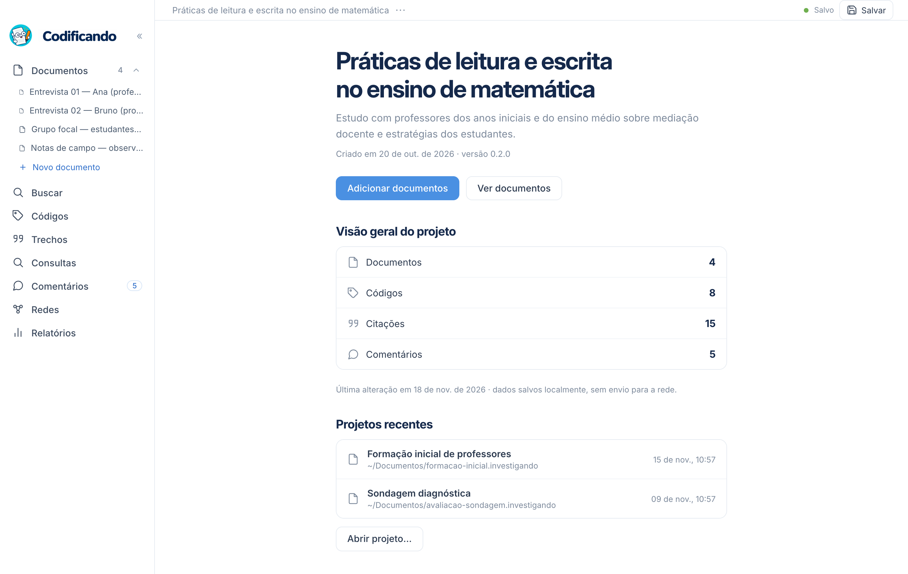
O botão « no alto da barra lateral a recolhe, deixando mais espaço para o texto. Para reabri-la, use o botão ☰ no canto superior esquerdo ou o atalho ⌘B.
O nome do projeto, no topo, é também um atalho para a visão geral. Ao lado dele, o menu ⋯ concentra as ações de arquivo: abrir projeto, salvar como, proteger com senha, mostrar a pasta de dados e backups.
À direita ficam o indicador de salvamento (ponto verde, âmbar ou vermelho), a hora do último salvamento e o botão Salvar, que força a gravação imediata. O salvamento é automático: o botão existe para quando você quiser garantir que o arquivo foi gravado antes de fechar o aplicativo ou desligar o computador.
Tudo o que você faz fica dentro de um arquivo de projeto. Um projeto pode reunir dezenas de documentos e milhares de trechos.
Ao abrir o aplicativo pela primeira vez, o projeto começa vazio e sem arquivo. Dê um nome em Configurações (clique no logo) ou use ⋯ → Salvar como… para escolher onde guardar o arquivo. A partir daí, cada alteração é gravada nesse arquivo.
Use ⋯ → Abrir projeto… e escolha um arquivo .investigando. A tela de
visão geral mostra, logo abaixo, a lista de Projetos recentes: os dez últimos
arquivos abertos, com nome, caminho abreviado e data. Um clique abre o projeto direto.
⋯ → Salvar como… grava uma cópia em outro arquivo e passa a trabalhar nela. É o caminho recomendado para criar versões do projeto (por exemplo, antes de uma reestruturação grande do codebook) ou para mover o arquivo para outra pasta.
A cada gravação bem-sucedida, o aplicativo guarda uma cópia do arquivo em
~/Library/Application Support/Investigando/backups/, em uma subpasta por projeto.
São no máximo 20 cópias por projeto, com no máximo uma por minuto — as mais antigas são
descartadas automaticamente. O capítulo 13 explica como listar e restaurar.
O Codificando aceita PDF, DOC, DOCX, TXT e RTF. Um documento pode ter até 5 milhões de caracteres.
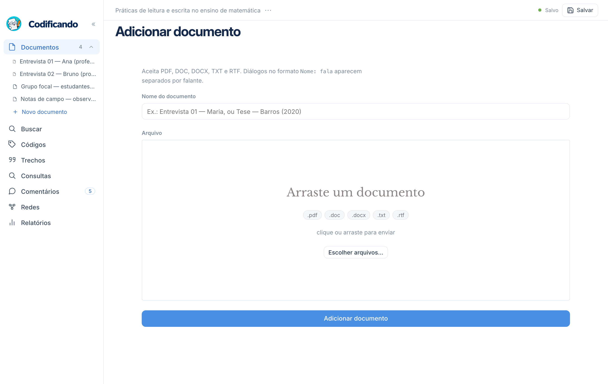
Quando o texto tem falantes no formato Nome: fala — como em transcrições de
entrevista —, o editor reconhece o padrão e exibe cada fala com o nome do falante destacado,
em vez de um bloco corrido. Não é preciso marcar nada: a detecção é automática.
Se o PDF não tiver camada de texto — o caso típico de documentos digitalizados —, o aplicativo percebe que o texto extraído é insuficiente e aplica OCR (reconhecimento óptico de caracteres) usando o motor nativo do macOS. Enquanto isso, a fila de importação mostra o aviso PDF escaneado: aplicando OCR….
Cada página é renderizada em resolução alta, reconhecida e remontada no mesmo formato de um PDF comum, com a mesma paginação. O resultado é um documento editável e codificável como qualquer outro. Se alguma página não puder ser reconhecida, ela fica em branco e o restante do documento é preservado.
Arquivos .docx são lidos diretamente. .doc e .rtf passam
pela conversão de texto do próprio macOS (textutil). O resultado é texto puro: formatação,
tabelas e imagens não são preservadas, porque o que interessa para a análise é o conteúdo.
O editor é onde a análise acontece: você lê o documento e transforma trechos em evidências ligadas a códigos.
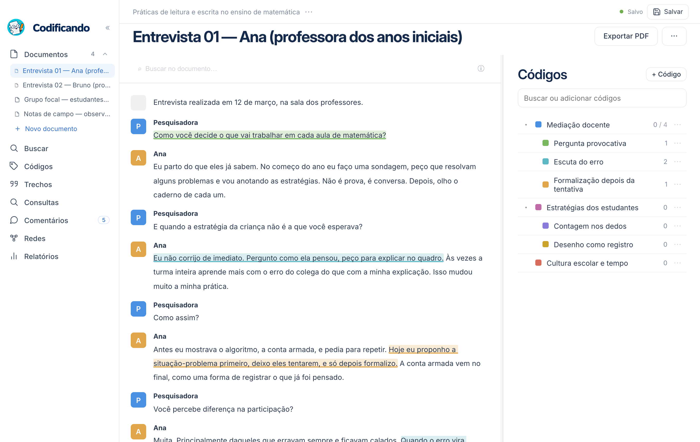
Se preferir, selecione o texto e pressione ⌘Enter para aplicar o último código usado. Para remover um trecho, clique sobre ele e escolha a ação de remover no menu do trecho, ou use ⌘Z imediatamente após a codificação.
Um mesmo trecho pode receber mais de um código. Quando há sobreposição, o editor mostra as duas marcações e o painel lateral indica a quais códigos o trecho pertence. Isso é útil para registrar, por exemplo, que uma fala é ao mesmo tempo mediação docente e cultura escolar.
⌘F abre a busca da página e leva à busca global; dentro do documento, o campo de busca no alto do texto localiza ocorrências e ⌘G salta para a próxima. Esc limpa a busca.
Com um trecho selecionado, escolha Comentar no menu do trecho. O comentário fica preso àquele recorte e aparece depois na página Comentários e nos relatórios. É o lugar para registrar interpretações, dúvidas, hipóteses e referências teóricas — sem poluir o texto original.
O codebook é a estrutura analítica do projeto. Códigos podem ser agrupados em códigos-pai, formando uma hierarquia de até vários níveis.
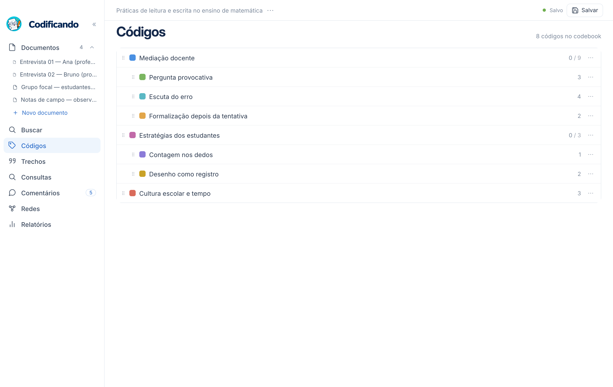
A contagem ao lado de cada código é o termômetro da análise: códigos com um único trecho costumam ser provisórios ou excessivamente específicos; códigos com dezenas de trechos podem estar amplos demais. O relatório de distribuição, no capítulo 10, mostra a mesma informação em barras.
A página de trechos é a vista de trabalho sobre as evidências: todos os recortes codificados do projeto em uma tabela única.
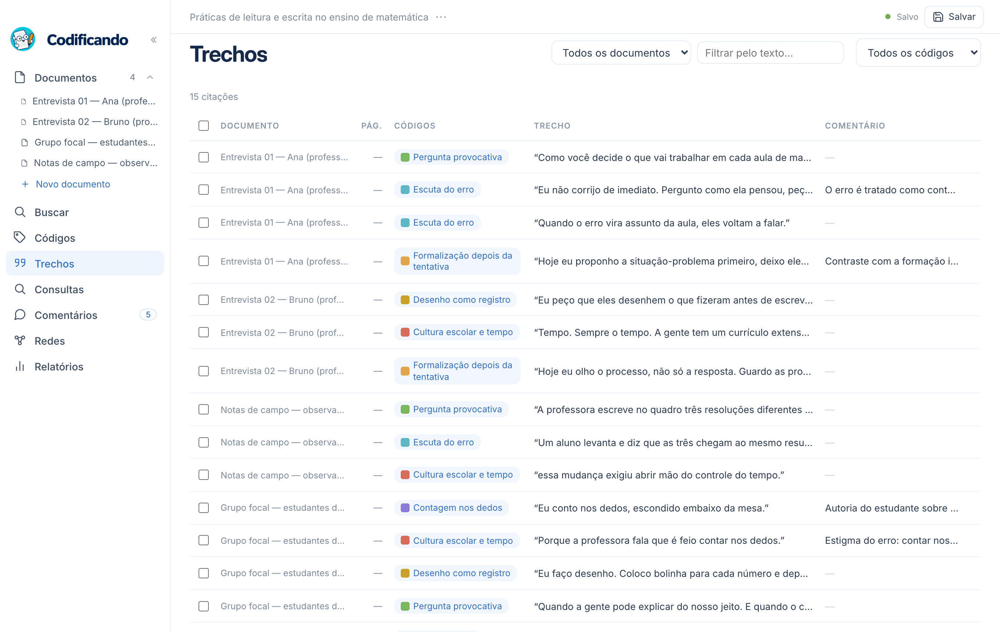
Os três controles no alto combinam-se entre si: documento, texto contido no trecho e código. Usar um código-pai traz também os trechos dos códigos-filho, o que permite olhar uma categoria inteira de uma vez.
Comentários são memos analíticos: ficam ligados a um trecho, mas não alteram o texto do documento.
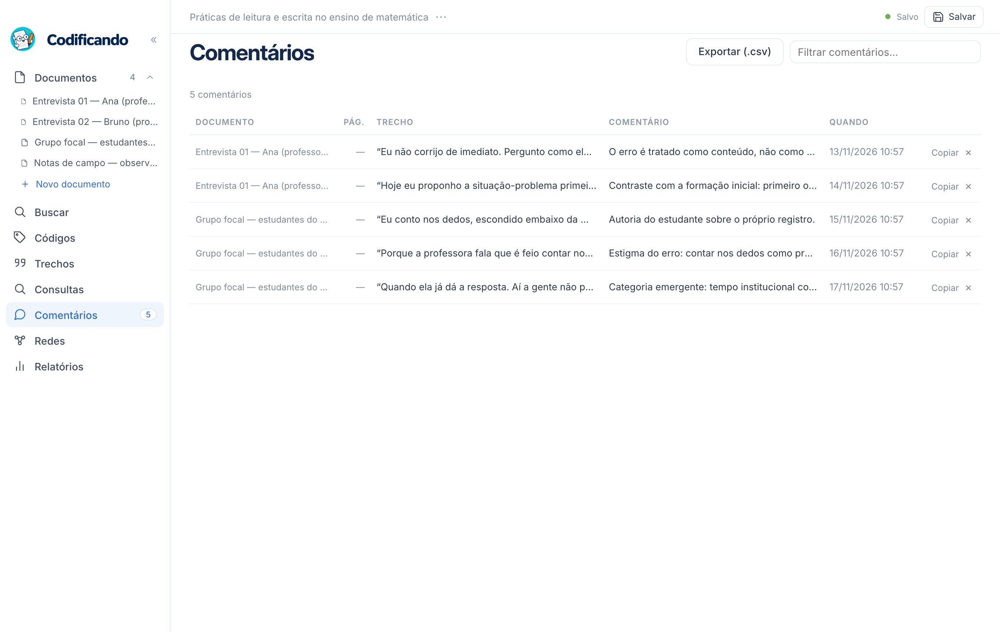
Cada comentário aparece também no editor, ao abrir o trecho correspondente, e é incluído na exportação em DOCX e HTML. O botão Exportar (.csv) gera uma planilha com documento, trecho, comentário e data, útil para análise em outro software.
Consultas combinam códigos, documentos e texto para responder perguntas do tipo “o que os professores dos anos iniciais dizem sobre erro?”.
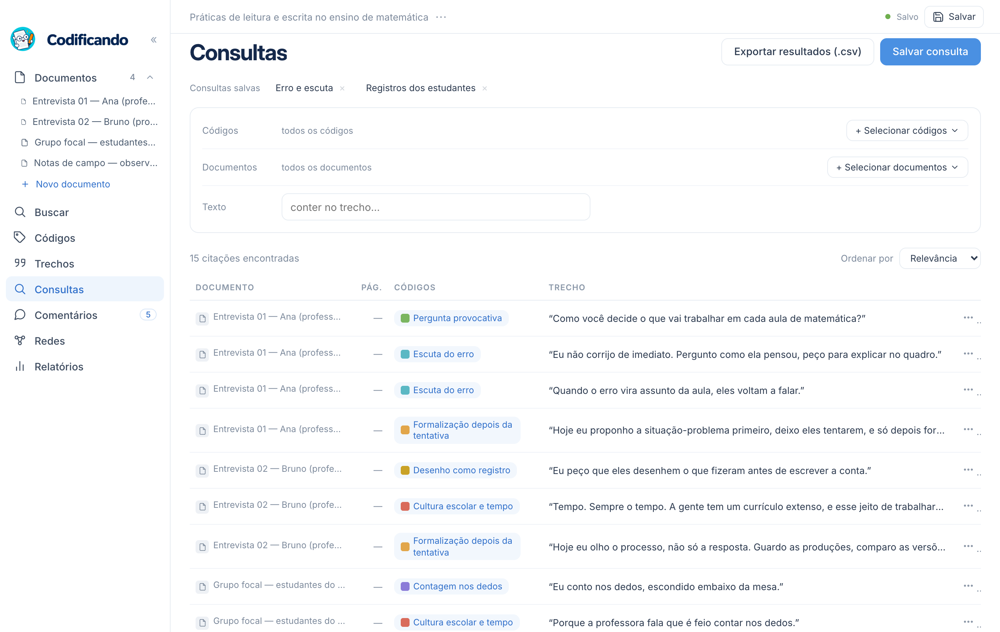
Exportar resultados (.csv) grava documento, página, códigos e texto de cada resultado — um jeito rápido de levar a evidência para uma planilha ou para o software de análise quantitativa.
A página de relatórios resume o projeto e exporta os dados em formatos que abrem em qualquer computador.
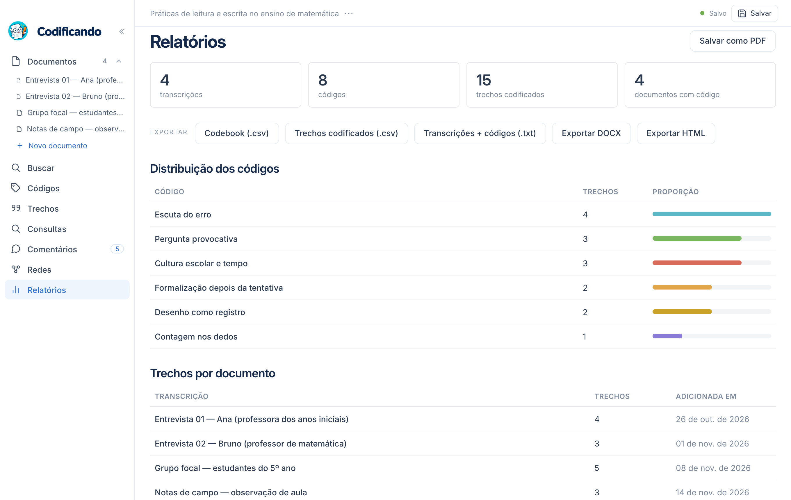
| Botão | O que gera | Para que serve |
|---|---|---|
| Codebook (.csv) | Códigos, hierarquia e contagens | Revisar a estrutura, comparar versões do codebook |
| Trechos codificados (.csv) | Documento, página, código, trecho e comentário | Análise em planilha ou software estatístico |
| Transcrições + códigos (.txt) | Texto completo com as marcações | Leitura corrida e conferência |
| Exportar DOCX | Relatório formatado, com tabelas | Anexo de projeto, relatório para orientador |
| Exportar HTML | Página autocontida, pronta para impressão | Enviar por e-mail, arquivar, imprimir |
| Salvar como PDF | PDF gerado pela impressão do sistema | Versão final para leitura |
Os dois formatos têm a mesma estrutura: cabeçalho com título e data, resumo numérico, tabela de códigos com contagem, trechos agrupados por código (com documento, página e comentário) e a lista de documentos. O DOCX usa fonte Arial e tabelas com cabeçalho sombreado; o HTML traz o CSS de impressão embutido, em A4. Ambos são gerados no seu computador, sem enviar nada para a rede.
A rede mostra, em uma só figura, como documentos, trechos e códigos se conectam no seu material.
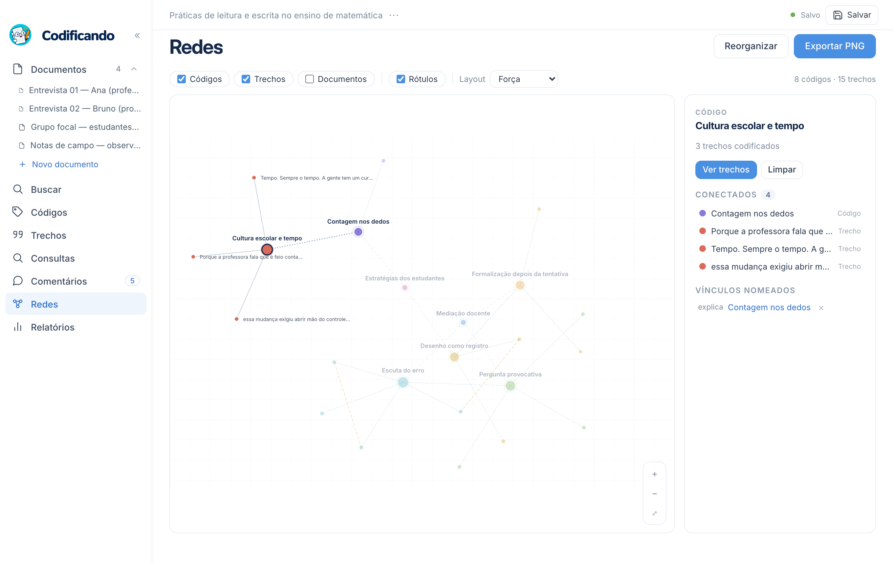
A linha fina indica codificação. O tracejado longo indica hierarquia do codebook. O tracejado curto indica um vínculo nomeado, criado por você: associado a, é parte de, contradiz, explica, precede, exemplifica ou retoma.
Use os filtros do alto para mostrar ou esconder códigos, trechos, documentos e rótulos. O seletor Layout alterna entre Força (os nós se acomodam pelas conexões) e Radial (códigos no centro, trechos em anéis). Arraste um nó para reposicioná-lo, arraste o fundo para navegar e use a roda do mouse ou os botões + e − para aproximar. Um clique seleciona e destaca as relações; duplo clique abre o documento, o trecho ou os códigos correspondentes.
Exportar PNG gera uma imagem de 3000 × 2100 pixels, com o nome do projeto, a data, a contagem de nós e uma legenda. O desenho é determinístico: o mesmo projeto, com o mesmo layout, produz a mesma figura em qualquer exportação — útil para comparar versões ou reproduzir uma figura no artigo. A imagem é salva onde você indicar, sem passar pela rede.
A busca varre todos os documentos e códigos do projeto e mostra o trecho ao redor de cada ocorrência.
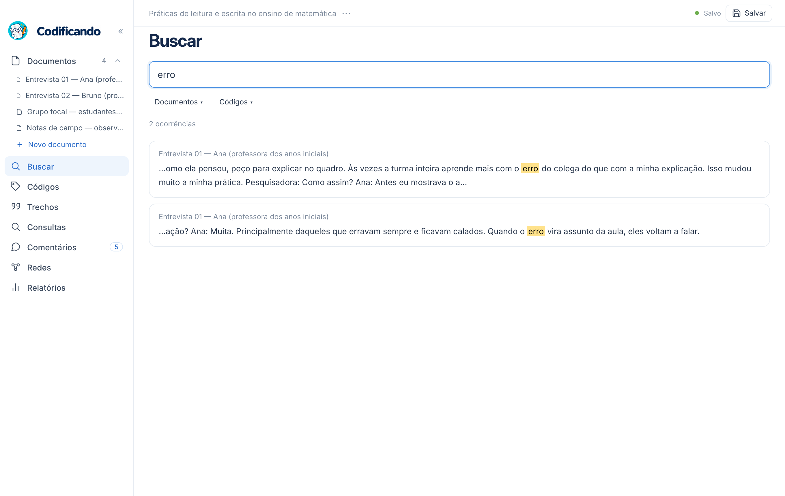
A busca ignora diferenças de acentuação e de maiúsculas: mediacao encontra mediação, e Erro encontra erro. O filtro por Documentos ou Códigos restringe o escopo. O atalho ⌘F leva direto para esta página de qualquer lugar do aplicativo.
As configurações reúnem a identidade do projeto, o caminho dos dados, a proteção por senha, os backups e a verificação de atualizações.
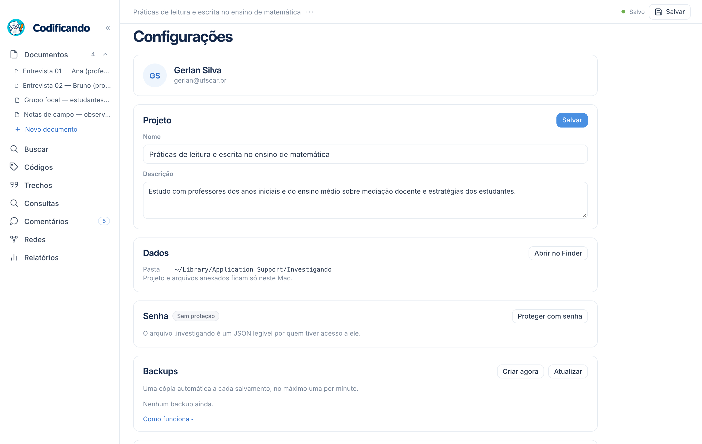
Nome e descrição aparecem na visão geral e nos relatórios exportados. A descrição é um bom lugar para registrar o recorte da pesquisa, os participantes e a etapa em que o material está.
O caminho exibido é a pasta onde o aplicativo guarda o projeto em uso e os arquivos anexados. Abrir no Finder mostra essa pasta para copiar ou conferir arquivos manualmente.
A lista mostra as versões guardadas automaticamente, da mais recente para a mais antiga, com data, hora e tamanho. Três ações estão disponíveis:
Projetos com material sensível podem ser gravados cifrados. O arquivo continua sendo um JSON válido, mas o conteúdo só é legível com a senha.
A senha não é guardada em lugar nenhum. A partir dela, o aplicativo deriva uma chave com PBKDF2-SHA256 (210 mil iterações) e cifra o conteúdo com AES-GCM de 256 bits, usando um sal e um vetor de inicialização aleatórios. Sem a senha, o arquivo é apenas ruído.
Ao abrir o arquivo, o aplicativo pede a senha. Enquanto ela não for informada, nenhum dado é carregado e nada é gravado por cima do arquivo — a tela inicial só é montada depois de uma leitura bem-sucedida.
As duas ações exigem a senha atual. Trocar senha… regrava o arquivo com a nova chave; Remover senha… volta a gravar JSON simples. Em ambos os casos, os backups antigos permanecem como estavam: cópias cifradas continuam cifradas.
Poucos atalhos, mas os que existem evitam idas e voltas com o mouse.
| Atalho | Ação | Onde |
|---|---|---|
| ⌘B | Recolher ou reabrir a barra lateral | Todo o aplicativo |
| ⌘ \\ | Mesma ação do anterior | Todo o aplicativo |
| ⌘F | Abrir a busca global | Todo o aplicativo |
| ⌘Z | Desfazer a última alteração | Todo o aplicativo |
| ⇧⌘Z | Refazer | Todo o aplicativo |
| ⌘G | Próxima ocorrência da busca no documento | Editor |
| ⌘Enter | Aplicar o último código à seleção | Editor |
| Esc | Fechar menus, limpar busca, cancelar seleção | Editor e diálogos |
O Codificando não tem servidor. Nada do que você importa ou escreve sai do computador.
~/Library/Application Support/Investigando/ e protegidos pelas permissões do macOS.As situações abaixo cobrem a maior parte dos relatos de suporte.
Clique com o botão direito no aplicativo em Aplicações, escolha Abrir e confirme Abrir. O aviso não volta a aparecer para esse aplicativo. Ele existe porque a distribuição é assinada localmente, não pela App Store.
Provavelmente é um PDF escaneado. Verifique se o aviso de OCR apareceu durante a importação e espere a fila concluir. Se o documento continuar vazio, a digitalização pode estar com resolução muito baixa ou o texto pode estar na vertical. Nesse caso, vale reescancear ou digitar o trecho de interesse como um documento de texto simples.
O arquivo foi gravado com proteção. Informe a senha usada quando a proteção foi criada. Se ela foi esquecida, não há recuperação: o conteúdo está cifrado de fato. Resta recorrer a um backup anterior que ainda não estivesse cifrado, se existir.
A gravação falhou — em geral porque o arquivo saiu do lugar, a pasta ficou sem permissão ou o disco está cheio. Use ⋯ → Salvar como… para gravar em um local novo e continue o trabalho a partir dele.
Outro programa gravou o arquivo que você tem aberto. O aviso não recarrega nada automaticamente, para não perder alterações em andamento. Feche o projeto e abra-o de novo para ler a versão atualizada do disco.
O Codificando permite apenas uma instância. Ao abrir o aplicativo com uma janela já aberta, a janela existente vem para a frente em vez de abrir uma segunda cópia — assim não há risco de duas gravações concorrentes no mesmo projeto.
É intencional. A análise trabalha com o texto, e não com a aparência. Tabelas e imagens de um DOCX não são importadas; se algum trecho depender de imagem, anote no comentário do trecho ou cite no seu texto.